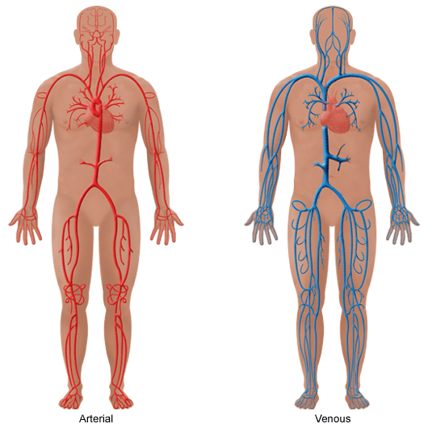

Home
About
Doppler Physics
Sunnybrook Research Institute
Dr. Peter Burns
Arterial Sounds
Head and Neck
Common Carotid
External Carotid
Internal Carotid
Vertebral
Thoracic
Arch of Aorta
Ascending Aorta
Brachocephalic
Thoracic
Upper Limbs
Axillary
Brachial
Radial
Ulnar
Subclavian
Abdominal and Pelvic
Abdominal Aorta
Celiac Trunk
Common Hepatic
Common Iliac
External Iliac
Internal Iliac
Renal
Superior Mesenteric
Lower Limbs
Anterior Tibial
Common Femoral
Peroneal
Popliteal
Posterior Tibial
Superficial Femoral
Tibioperoneal
Veneous Sounds
Head and Neck
Anterior Jugular
External Jugular
Internal Jugular
Vertebral
Thoracic
Brachiocephalic
Superior Vena Cava
Upper Limbs
Axillary
Basilic
Brachial
Cephalic
Radial
Subclavian
Ulnar
Abdominal and Pelvic
Common Iliac
External Iliac
Hepatic
Inferior Vena Cava
Internal Iliac
Renal
Lower Limbs
Anterior Tibial
Femoral
Great Saphenous
Popliteal
Posterior Tibial
Small Saphenous
